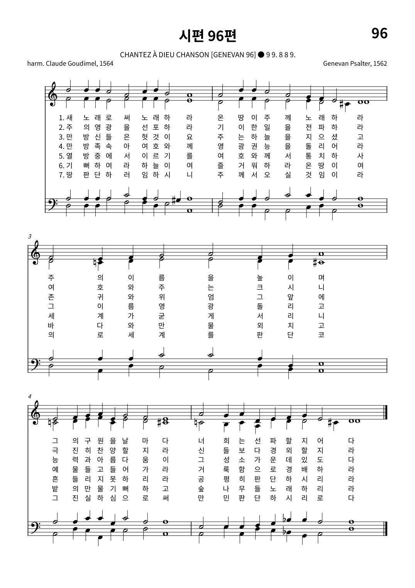

시편 96편
CHANTEZ À DIEU CHANSON [GENEVAN 96] · 9 9. 8 8 9.
곡조: Genevan Psalter, 1562 · 화성: Claude Goudimel, 1564 · 가사: 개역한글판 시편 96편 편역(AI 초벌 편역판 · 신학 감수 전) · 7절
악보 PDF MusicXML(출력용) MusicXML(반주용, 전주·반복 포함) 개역한글 시편 96편 읽기

가사
1절
새 노래로써 노래하라
온 땅이 주께 노래하라
주의 이름을 높이며
그의 구원을 날마다
너희는 선파할지어다
새 노래로써 노래하라
온 땅이 주께 노래하라
주의 이름을 높이며
그의 구원을 날마다
너희는 선파할지어다
2절
주의 영광을 선포하라
기이한 일을 전파하라
여호와 주는 크시니
극진히 찬양할지라
신들보다 경외할지라
주의 영광을 선포하라
기이한 일을 전파하라
여호와 주는 크시니
극진히 찬양할지라
신들보다 경외할지라
3절
만방 신들은 헛것이요
주는 하늘을 지으셨고
존귀와 위엄 그 앞에
능력과 아름다움이
그 성소 가운데 있도다
만방 신들은 헛것이요
주는 하늘을 지으셨고
존귀와 위엄 그 앞에
능력과 아름다움이
그 성소 가운데 있도다
4절
만방 족속아 여호와께
영광 권능을 돌리어라
그 이름 영광 돌리고
예물 들고 들어가라
거룩함으로 경배하라
만방 족속아 여호와께
영광 권능을 돌리어라
그 이름 영광 돌리고
예물 들고 들어가라
거룩함으로 경배하라
5절
열방 중에서 이르기를
여호와께서 통치하사
세계가 굳게 서리니
흔들리지 못하리라
공평히 판단하시리라
열방 중에서 이르기를
여호와께서 통치하사
세계가 굳게 서리니
흔들리지 못하리라
공평히 판단하시리라
6절
기뻐하여라 하늘이여
즐거워하라 온 땅이여
바다와 만물 외치고
밭의 만물 기뻐하고
숲 나무들 노래하리라
기뻐하여라 하늘이여
즐거워하라 온 땅이여
바다와 만물 외치고
밭의 만물 기뻐하고
숲 나무들 노래하리라
7절
땅 판단하러 임하시니
주께서 오실 것임이라
의로 세계를 판단코
그 진실하심으로써
만민 판단하시리로다
땅 판단하러 임하시니
주께서 오실 것임이라
의로 세계를 판단코
그 진실하심으로써
만민 판단하시리로다